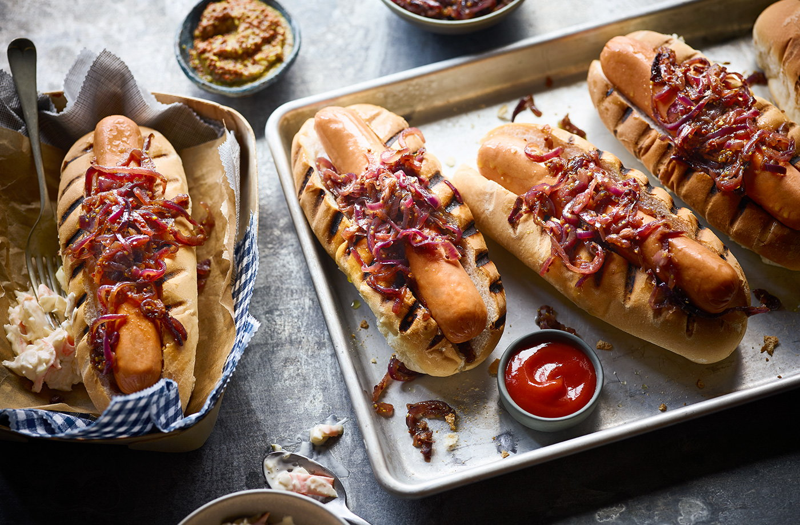

Hot Dog

Description
Delicious Hot-Dog with BBQ sauce and some chopped onions.
Delicatesy especially with some beer or wine.
Ingredients
- 3 Sausages
- 1/4 Onion
- 3 Breads
- BBQ Sauce
Steps
- Let abou 2L of water cook in a cooking pot untill it boils.
- Spread 3 sausages on a chopping board, and slice the surface slightly on both sides in the shapes of little X's.
- Chuck the sausages inside the boiling water and cover it with a lid. Let it cook for about 7-8 minutes.
- Chop up about 1/4th of an onion in the meantime, slice up the breads to fit the sausages, and squirt litle bit of BBQ sauce inside of them.
- Take out the sausages, and fit them inside the breads.
- Squirt some more BBQ sauce on top in a squiggly pattern, and add the chopped onions.
- Serve. Able to eat imidiately.